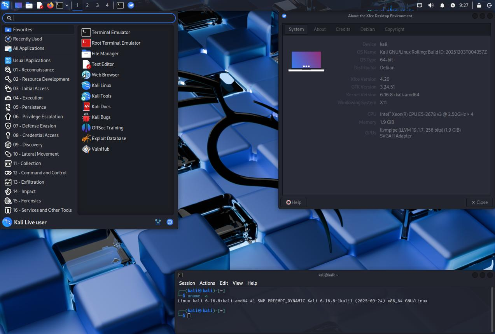

You said:
ChatGPT said:
Sì, possiamo aggiornare m-boot senza perdere la partizione ext4 e tutti i suoi contenuti. Anzi, ritengo che questo debba diventare il normale meccanismo di aggiornamento della chiavetta.
Ho verificato l'attuale implementazione di m-boot (HEAD 6ab5a5d) e l'handoff corrente.
1. La struttura attuale è già adatta
Chiavetta fisica dopo la nuova installazione
GPT + MBR
Metadati e avvio BIOS
Partizione 1 — BIOS Boot
GRUB BIOS, aggiornabile
Partizione 2 — FAT32 ESP
UEFI x86/ARM, m-loader, moduli, menu, temi — aggiornabili
Partizione 3 — ext4
Tutto lo spazio rimanente: ISO, strumenti, VM, backup e altri dati
2. Attenzione: non possiamo semplicemente riflashare i primi 576 MiB
C'è un dettaglio importante nell'implementazione corrente:
L'immagine distribuita occupa 576 MiB.
La partizione ext4 sulla chiavetta comincia al MiB 523.
Un
dddei primi 576 MiB sovrascriverebbe quindi i primi 53 MiB della partizione ext4, oltre a sostituire la GPT con quella dell'immagine originale.
Questo distruggerebbe informazioni essenziali del filesystem.
Perciò serve un aggiornamento selettivo che conosca la struttura delle partizioni, non un dd parziale fatto alla cieca.
3. Come funzionerebbero gli aggiornamenti futuri
Operazione | Comportamento |
|---|---|
Aggiungere o sostituire ISO | Normale copia di file su ext4 |
Aggiornare menu, configurazione, temi | Aggiornamento dei file sulla ESP |
Aggiornare GRUB UEFI | Sostituzione controllata dei binari e moduli sulla ESP |
Aggiornare GRUB BIOS | Aggiornamento mirato del codice BIOS e della partizione 1 |
Aggiornare l'intero m-boot | Aggiornamento delle componenti di boot, conservando GPT ed ext4 |
Cambiare il layout delle partizioni | Migrazione separata, eventualmente con backup/ripristino |
Io introdurrei una modalità di upgrade non distruttivo nel normale strumento di installazione, anziché costringere l'utente a reinstallare tutto.
Dovrebbe verificare il layout esistente, identificare la release installata, salvare i componenti di avvio precedenti, aggiornare quelli necessari e verificare il risultato. La partizione ext4 non dovrebbe essere formattata, spostata o modificata.
Questo meccanismo è una proposta: non è ancora implementato.
4. Cosa facciamo adesso
L'attuale usb-install.sh supporta soltanto l'installazione distruttiva iniziale, con selezione del disco e conferma esplicita.
Per la chiavetta fisica ancora in exFAT, il percorso previsto è:
Conservare autonomamente una copia dei dati attuali.
Aggiornare il checkout di
m-boot.Eseguire
./usb-install.shsu Linux, selezionando e confermando il disco corretto.Lasciare che l'installer crei la nuova partizione ext4.
Ripristinare i file nella stessa organizzazione
/m/boot/iso/e nelle altre directory esistenti.Verificare la nuova chiavetta, prima con controlli del filesystem e poi con prove di avvio reali.
La reinstallazione fisica non è ancora stata eseguita in questa sessione.
La mia proposta è quindi di mantenere l'immagine completa da 576 MiB per la prima installazione e aggiungere un aggiornamento selettivo per tutte le installazioni successive. Non sarebbe più necessario riflashare la chiavetta né recuperare i dati ext4 a ogni nuova release.
You said:
ChatGPT said:
La reinstallazione è pronta dal punto di vista degli artefatti pubblicati: ho verificato m-boot all'HEAD 6ab5a5de e la configurazione per creare automaticamente la partizione dati ext4 MBOOTDATA.
Il risultato previsto sulla chiavetta è:
Partizione | Contenuto |
|---|---|
1 — 10 MiB | GRUB BIOS |
2 — 512 MiB FAT32 | UEFI x86_64/ARM64 e m-loader |
3 — ext4 | Tutto lo spazio rimanente, per ISO e dati |
Attenzione: la procedura cancellerà tutte le partizioni e tutti i file attuali. La copia dei payload deve essere già al sicuro fuori dalla chiavetta.
Non ho accesso diretto al terminale di vmdev, quindi l'operazione sul dispositivo fisico deve essere lanciata lì. Il programma gestisce autonomamente selezione del disco, conferma distruttiva, scrittura, creazione di ext4 e verifica.
Ho corretto il controllo dei permessi nell’installer e pubblicato la modifica su m-boot. La validazione GitHub Actions è terminata con SUCCESS, compresa la prova di creazione ext4 su un disco virtuale.
Esecuzione su vmdev
Apri un terminale ed esegui:
cd /m/src/git/m-boot
git pull --ff-only
grep -E '^(image_bytes|partition_count|data_filesystem|loader_location)=' images/BUILD-INFO.txt
lsblk -o NAME,PATH,MODEL,SERIAL,SIZE,TYPE,TRAN,LOG-SEC,FSTYPE,LABEL,MOUNTPOINTS
./usb-install.shImportante: avvia ./usb-install.sh senza sudo. Il programma richiede autonomamente i privilegi necessari, mantenendo la directory ext4 scrivibile dal tuo utente.
L'installer mostrerà i dischi numerati e i dettagli del dispositivo scelto. La chiavetta precedente era una SanDisk Ultra USB 3.0 da circa 57 GiB, ma verifica il modello e il dispositivo effettivi, senza presumere che sia ancora /dev/sda.
Solo dopo aver verificato il backup esterno e il disco selezionato, inserisci la conferma ERASE richiesta dal programma.
Verifica finale
Quando l'installer avrà terminato, esegui:
lsblk -o NAME,PATH,MODEL,SIZE,TYPE,FSTYPE,LABEL,PARTLABEL,MOUNTPOINTSDovremo vedere la partizione FAT32 e la nuova MBOOTDATA ext4, estesa allo spazio disponibile.
La chiavetta non è stata ancora modificata da questa sessione. Ho anche sincronizzato l'handoff. Incollami l'output dell'installer e del controllo finale: verificherò il risultato prima di passare al ripristino delle ISO e alle prove di avvio.
You said:
ChatGPT said:
Il log di vmdev conferma che la reinstallazione della SanDisk Ultra USB 3.0 è terminata correttamente.
Componente | Risultato |
|---|---|
Immagine m-boot da 576 MiB | Scritta e verificata SHA256 |
GPT | Verificata correttamente |
| BIOS Boot, 10 MiB |
| FAT32 |
| ext4 |
Controllo ext4 | Completato senza errori |
Installer |
|
L'avvertimento sull'allineamento finale a 2048 settori non costituisce un errore: la verifica GPT è passata e la partizione dati occupa lo spazio previsto.
Ho anche controllato che il menu corrente di m-loader carichi il modulo GRUB ext2, necessario per leggere ext4, e cerchi la directory /m/boot/iso sulla partizione MBOOTDATA.
Puoi quindi procedere al ripristino delle ISO, mantenendo la struttura precedente senza ricreare le directory del bootloader sulla partizione dati.
Montaggio e copia delle ISO
Dall'ultimo lsblk, la partizione ext4 non risulta ancora montata. Per montarla come utente normale:
udisksctl mount -b /dev/sda3
findmnt -rn -S /dev/sda3 -o TARGETSe il sistema l'ha già montata automaticamente, basta il secondo comando.
Mantieni questa organizzazione:
MBOOTDATA/
└── m/
└── boot/
├── iso/
│ ├── #sha256sums.txt
│ ├── ubuntu-26.04.1-desktop-amd64.iso
│ └── ...
└── efi/
├── netboot/
└── memtest/Puoi copiare normalmente con il file manager, senza sudo. Non copiare m-loader su ext4: è già installato sulla ESP.
Al termine, se hai ripristinato il manifesto originale, verifica gli hash:
mp=$(findmnt -rn -S /dev/sda3 -o TARGET)
cd "$mp/m/boot/iso"
sha256sum -c '#sha256sums.txt'Dopo la verifica, esegui sync e smonta in sicurezza la chiavetta.
Ho aggiornato anche l'handoff m-boot con il risultato della reinstallazione fisica. Il prossimo controllo sarà il primo avvio delle ISO dalla nuova ext4, distinguendo il funzionamento del menu GRUB dall'avvio completo di ciascun sistema.
You said:
ChatGPT said:
Possiamo fare due gruppi di test con QEMU: il bootloader dell'immagine pubblicata e la chiavetta fisica con le ISO su ext4.
1. Test BIOS e UEFI dell'immagine pubblicata — anche adesso
Questi test non accedono alla chiavetta e possono essere eseguiti mentre copi le ISO:
cd /m/src/git/m-boot
./tests/qemu-published-test.sh --verify-only
./tests/qemu-published-test.sh --target allIl secondo comando apre, uno alla volta, tre ambienti QEMU:
x86_64 BIOS (
i386-pc)x86_64 UEFI (
x86_64-efi)ARM64 UEFI (
arm64-efi)
In ciascuno verifica che appaia il menu grafico m-loader, prova Inspect boot context, chiudi QEMU e rispondi PASS o FAIL nel terminale.
Il test crea una copia temporanea dell'immagine da 576 MiB, usa la modalità snapshot e non richiede sudo. Non testa ancora le ISO, perché quell'immagine non contiene la partizione dati ext4.
2. Test della chiavetta fisica /dev/sda — dopo la copia
Non avviare QEMU sulla chiavetta mentre le ISO vengono copiate. Prima termina la copia, verifica gli hash, smonta ext4 e controlla che nessuna partizione della chiavetta sia montata.
sync
sudo umount /dev/sda3
lsblk -o NAME,FSTYPE,LABEL,MOUNTPOINTS /dev/sda
mkdir -p /m/src/git/m-boot-qemu-tmpNei comandi seguenti QEMU usa -snapshot: le scritture del sistema virtuale finiscono in file temporanei, senza essere normalmente riportate sulla chiavetta. Non utilizzare il comando commit del monitor QEMU.
Test A — BIOS x86_64
Test prioritario: menu, rilevamento ext4 e avvio Ubuntu
sudo -E env TMPDIR=/m/src/git/m-boot-qemu-tmp \
qemu-system-x86_64 \
-machine pc \
-accel tcg \
-m 6144 \
-smp 2 \
-drive if=none,id=mboot,format=raw,file=/dev/sda \
-device ide-hd,drive=mboot \
-boot c \
-snapshotTest B — UEFI x86_64
Se i firmware Ubuntu sono in /usr/share/OVMF:
sudo -E env TMPDIR=/m/src/git/m-boot-qemu-tmp \
qemu-system-x86_64 \
-machine q35 \
-accel tcg \
-m 6144 \
-smp 2 \
-drive if=pflash,format=raw,readonly=on,file=/usr/share/OVMF/OVMF_CODE.fd \
-drive if=pflash,format=raw,file=/usr/share/OVMF/OVMF_VARS.fd \
-drive if=none,id=mboot,format=raw,file=/dev/sda \
-device virtio-blk-pci,drive=mboot \
-snapshotSe i file OVMF_CODE.fd e OVMF_VARS.fd non esistono, controlla le varianti _4M.fd e usa la coppia corrispondente.
Test C — UEFI ARM64
sudo -E env TMPDIR=/m/src/git/m-boot-qemu-tmp \
qemu-system-aarch64 \
-machine virt \
-cpu cortex-a72 \
-accel tcg \
-m 6144 \
-smp 2 \
-drive if=pflash,format=raw,readonly=on,file=/usr/share/AAVMF/AAVMF_CODE.fd \
-drive if=pflash,format=raw,file=/usr/share/AAVMF/AAVMF_VARS.fd \
-drive if=none,id=mboot,format=raw,file=/dev/sda \
-device virtio-blk-device,drive=mboot \
-device ramfb \
-snapshotAnche qui verifica i percorsi AAVMF: l'installer di QEMU supportato da m-boot cerca eventualmente i firmware alternativi in /usr/share/qemu.
3. Cosa verificare
Che appaia il menu grafico
m-loader.Che Bootable media rilevi la partizione ext4.
Che le ISO compaiano nelle rispettive categorie.
Per Ubuntu x86_64, che il boot prosegua oltre GRUB e raggiunga un ambiente live o installer effettivamente funzionante, senza fermarsi in BusyBox
ash.
Ho impostato 6 GiB di RAM per ridurre il rischio del precedente errore di memoria: verifica che vmdev abbia RAM disponibile sufficiente con free -h.
Ti suggerisco di iniziare dal Test A, BIOS x86_64, una volta terminata la copia. È il confronto più diretto con il precedente fallimento su exFAT. Se Ubuntu supera l'avvio precedente, avremo un primo risultato concreto sulla nuova ext4.
You said:
ChatGPT said:
Per la nuova VM Ubuntu ARM64, puoi reinstallare tutto il necessario per testare m-boot con QEMU in BIOS x86_64, UEFI x86_64 e UEFI ARM64.
Ho verificato i requisiti dell'attuale m-boot e la disponibilità dei pacchetti Ubuntu 26.04 ARM64. Le immagini GRUB sono già incluse nel repository: non serve compilare GRUB né installare i pacchetti GRUB del sistema per eseguire questi test.
1. Installare le dipendenze
Esegui sulla VM Ubuntu:
sudo apt update
sudo apt install -y \
git ca-certificates \
qemu-system-x86 \
qemu-system-arm \
qemu-system-gui \
qemu-utils \
ovmf \
qemu-efi-aarch64 \
gdisk \
parted \
dosfstools \
e2fsprogs \
util-linux \
gzip unzip xz-utilsI due pacchetti firmware sono importanti: ovmf fornisce UEFI x86_64, mentre qemu-efi-aarch64 fornisce UEFI ARM64.
2. Verificare l'installazione
uname -m
cat /etc/os-release
qemu-system-x86_64 --version
qemu-system-aarch64 --version
ls -lh \
/usr/share/OVMF/OVMF_CODE_4M.fd \
/usr/share/OVMF/OVMF_VARS_4M.fd \
/usr/share/AAVMF/AAVMF_CODE.fd \
/usr/share/AAVMF/AAVMF_VARS.fd
free -hCi aspettiamo aarch64 come architettura host, entrambi gli emulatori disponibili e i quattro file firmware presenti.
Per ripetere il test completo di Ubuntu x86_64 con 6 GiB di RAM virtuale, assegna alla VM Ubuntu ARM64 almeno 8–10 GiB di RAM, preferibilmente di più.
3. Recuperare il repository m-boot
Se dopo la reinstallazione hai ancora il checkout in /m/src/git, viene aggiornato; altrimenti ne viene creato uno nella tua home.
if [ -d /m/src/git/m-boot/.git ]; then
cd /m/src/git/m-boot
git pull --ff-only
else
mkdir -p "$HOME/src/git"
git clone https://github.com/massimilianonardi-ai/m-boot.git \
"$HOME/src/git/m-boot"
cd "$HOME/src/git/m-boot"
fi
git rev-parse HEAD4. Avviare i tre test QEMU
Prima verifica i checksum dell'immagine pubblicata:
./tests/qemu-published-test.sh --verify-only --output "$HOME"Poi avvia i test dei tre firmware:
./tests/qemu-published-test.sh --target all --output "$HOME"Si apriranno tre finestre QEMU in sequenza. Per ciascuna controlla che il menu grafico m-loader funzioni, chiudi la finestra e inserisci PASS o FAIL nel terminale.
Il programma usa immagini temporanee e snapshot: non accede alla chiavetta fisica e non richiede sudo.
5. Verificare il collegamento della chiavetta alla nuova VM
Dopo la copia delle ISO, e prima dei test sulla chiavetta reale:
lsblk -o NAME,PATH,MODEL,SERIAL,SIZE,TRAN,FSTYPE,LABEL,MOUNTPOINTSCon la reinstallazione di macOS e VMware, il passthrough USB potrebbe dover essere riattivato. Non presumere che la SanDisk sia ancora /dev/sda.
Nota sulle prestazioni: l'emulazione x86_64 sulla VM Ubuntu ARM64 usa TCG, quindi sarà sensibilmente più lenta. Lo script di test del bootloader assegna 1 GiB ai guest, sufficiente per il controllo del menu; il test dell'installer Ubuntu richiederà invece più memoria.
Ho aggiornato l'handoff con la reinstallazione dei due sistemi e con la necessità di rivalidare l'ambiente. Nessun test QEMU è ancora stato eseguito sulla nuova VM.
You said:
ChatGPT said:
Dall’output che hai allegato, l’ambiente è pronto per iniziare i test QEMU del bootloader.
Tutte le 19 immagini ISO e gli altri payload elencati hanno superato la verifica SHA256.
L’installazione delle dipendenze QEMU è terminata regolarmente.
qemu-system-x86_64eqemu-system-aarch64funzionano entrambi, versione 10.2.1.I firmware OVMF e AAVMF sono presenti.
C’è però un limite importante: la VM Ubuntu ARM64 dispone di 7,2 GiB di RAM complessiva, di cui 4,4 GiB disponibili al momento del controllo. Per i test del solo menu m-loader va bene; per avviare Ubuntu desktop con un guest da 6 GiB ti consiglio di aumentare prima la RAM della VM, idealmente a 12 GiB o più.
Primo test: tutti e tre i firmware
cd /m/src/git/m-boot
./tests/qemu-published-test.sh --verify-only --output "$HOME"
./tests/qemu-published-test.sh --target all --output "$HOME"Per ogni finestra verifica il menu grafico, prova Inspect boot context, poi chiudi QEMU e inserisci PASS oppure FAIL nel terminale.
Questo test non accede alla chiavetta fisica e non modifica le ISO.
Quando passi ai test sulla chiavetta fisica, assicurati prima che tutte le sue partizioni siano smontate e che la copia sia conclusa. Usa soltanto QEMU con -snapshot.
Ho registrato nell'handoff i risultati delle verifiche SHA256, l'installazione riuscita di QEMU e il limite attuale di RAM. I test di avvio restano da confermare.
Mandami l'output e, se un test fallisce, anche ciò che compare nella finestra QEMU: distingueremo i problemi di firmware, GRUB, riconoscimento ext4 e avvio delle singole ISO.
You said:
ChatGPT said:
Perché il terzo test non risponde alla tastiera?
I tre test corrispondono a:
Test | Piattaforma | Firmware | Tuo risultato |
|---|---|---|---|
1 | x86_64 | BIOS legacy | PASS |
2 | x86_64 | UEFI OVMF | PASS |
3 | ARM64 (AArch64) | UEFI AAVMF | Menu visibile, tastiera non funzionante |
Ho individuato una causa concreta nel launcher attuale: il terzo test usa la macchina QEMU virt con framebuffer ramfb, ma non aggiunge una tastiera virtuale USB. Sulle macchine x86 QEMU fornisce invece normalmente una tastiera compatibile PC.
Non sembra quindi soltanto un problema di scorciatoie intercettate da QEMU: al guest ARM64 potrebbe proprio mancare il dispositivo di input. QEMU documenta espressamente l'aggiunta di un controller XHCI e di usb-kbd per questi casi.
La differenza rispetto ai vecchi test non grafici è un'altra: il menu corrente m-loader attiva gfxterm per l'output grafico. L'opzione -serial mon:stdio collega la porta seriale al terminale esterno, ma non obbliga GRUB a duplicare il menu sulla seriale. Nei vecchi test la console seriale era verosimilmente configurata anche come terminale GRUB.
Per correggere il test ARM64, occorre aggiungere al launcher:
-device qemu-xhci,id=xhci \
-device usb-kbd,bus=xhci.0Passiamo però ora alla priorità che hai indicato: testare la chiavetta fisica con ext4 e le ISO, non più l'immagine pubblicata.
Test della chiavetta: iniziamo da BIOS x86_64
Prima identifica nuovamente la SanDisk. Il numero del dispositivo potrebbe essere cambiato dopo la reinstallazione della VM.
lsblk -o NAME,PATH,MODEL,SERIAL,SIZE,TYPE,TRAN,FSTYPE,LABEL,MOUNTPOINTSVerifica che corrisponda alla SanDisk Ultra USB 3.0, seriale 4C530001240917102190, con MBOOTESP e MBOOTDATA.
Se è ancora /dev/sda, dopo avere chiuso ogni programma che utilizza la chiavetta:
sync
udisksctl unmount -b /dev/sda3Se anche /dev/sda2 risulta montata, smonta anche quella. Controlla con lsblk che non rimangano mountpoint.
Poi, solo dopo aver confermato che /dev/sda è la SanDisk, esegui:
mkdir -p /m/src/git/m-boot-qemu-tmp
sudo -E env TMPDIR=/m/src/git/m-boot-qemu-tmp \
qemu-system-x86_64 \
-machine pc \
-accel tcg \
-m 3072 \
-smp 2 \
-drive if=none,id=mboot,format=raw,file=/dev/sda \
-device ide-hd,drive=mboot \
-boot c \
-snapshotIl parametro -snapshot fa sì che QEMU scriva su file temporanei anziché sulla chiavetta. Non usare il comando commit del monitor QEMU, che potrebbe riversare le modifiche sul supporto.
Verifica questo percorso nel menu:
Bootable media → Live systems and installers → Ubuntu desktop AMD64
Controlliamo sia che GRUB trovi la ISO su ext4, sia che Ubuntu prosegua oltre il caricamento iniziale.
Con i 7,2 GiB di RAM attuali della VM host, imposto inizialmente 3 GiB al guest. Se Ubuntu termina per memoria insufficiente, questo non dimostra un difetto della lettura ext4.
Successivamente: UEFI x86_64 sulla chiavetta
Usa sempre /dev/sda solo se identificato correttamente e con tutte le partizioni smontate.
(
work=$(mktemp -d "$HOME/.mboot-ovmf.XXXXXXXX") || exit 1
trap 'rm -rf -- "$work"' 0
cp /usr/share/OVMF/OVMF_VARS_4M.fd "$work/vars.fd" || exit 1
sudo -E env TMPDIR=/m/src/git/m-boot-qemu-tmp \
qemu-system-x86_64 \
-machine q35 \
-accel tcg \
-m 3072 \
-smp 2 \
-drive if=pflash,format=raw,readonly=on,file=/usr/share/OVMF/OVMF_CODE_4M.fd \
-drive if=pflash,format=raw,file="$work/vars.fd" \
-drive if=none,id=mboot,format=raw,file=/dev/sda \
-device virtio-blk-pci,drive=mboot \
-snapshot
)Infine: ARM64 UEFI sulla chiavetta, con tastiera corretta
Qui aggiungo esplicitamente il controller USB e la tastiera che mancano nel launcher corrente.
(
work=$(mktemp -d "$HOME/.mboot-aavmf.XXXXXXXX") || exit 1
trap 'rm -rf -- "$work"' 0
cp /usr/share/AAVMF/AAVMF_VARS.fd "$work/vars.fd" || exit 1
sudo -E env TMPDIR=/m/src/git/m-boot-qemu-tmp \
qemu-system-aarch64 \
-machine virt \
-cpu cortex-a72 \
-accel tcg \
-m 3072 \
-smp 2 \
-drive if=pflash,format=raw,readonly=on,file=/usr/share/AAVMF/AAVMF_CODE.fd \
-drive if=pflash,format=raw,file="$work/vars.fd" \
-drive if=none,id=mboot,format=raw,file=/dev/sda \
-device virtio-blk-device,drive=mboot \
-device ramfb \
-device qemu-xhci,id=xhci \
-device usb-kbd,bus=xhci.0 \
-snapshot
)Nel terzo test seleziona Ubuntu desktop ARM64, non AMD64.
Queste prove utilizzano i byte della chiavetta fisica, ma QEMU la presenta come disco IDE o VirtIO: verificano GPT, GRUB, ext4 e il percorso di avvio delle ISO, non il passthrough USB nativo del guest.
Ho registrato nell'handoff i primi due risultati positivi e il problema della tastiera ARM64, da correggere anche nel launcher permanente.
Partiamo dal BIOS sulla chiavetta: comunicami fino a quale fase arriva Ubuntu, soprattutto se raggiunge l'ambiente live oppure ritorna nella shell ash.
You said:
ChatGPT said:
Il test sulla chiavetta conferma un progresso sostanziale: Ubuntu 26.04.1 AMD64 ha superato il precedente blocco in BusyBox ash ed è arrivato al live installer usando BIOS, GRUB e la ISO sulla partizione ext4. Registrerò questo come avvio dell’installer riuscito, non come installazione completa.
Per completare il sistema di menu seguirò due criteri: ogni immagine deve essere individuabile nella categoria corretta e ogni voce di avvio deve tentare un meccanismo reale. Dove un formato ISO richiede un caricatore dedicato, la voce sperimentale deve dichiararlo chiaramente, senza presentare un semplice rilevamento come boot riuscito.
Menu aggiornati nel repository
Ho pubblicato le modifiche su m-boot/main, revisione 3f1b440449828926b7f641eba61b22ef16b6ea92.
Le quattro categorie ora comprendono tutte le famiglie di ISO che hai copiato:
Categoria | Immagini presenti nei menu |
|---|---|
Recovery and backup | Clonezilla, GParted, Grml AMD64/ARM64, Finnix, Rescuezilla, SystemRescue, Super Grub2, HBCD PE |
Live systems and installers | Ubuntu AMD64/ARM64, Proxmox VE AMD64/ARM64, Proxmox Backup Server, TrueNAS SCALE, OPNsense |
Hardware diagnostics | Memtest86+ e binari EFI opzionali |
Network boot | netboot.xyz multiarch e payload iPXE opzionali |
Le voci prevedono tentativi di avvio tramite le ricette esistenti, la configurazione GRUB interna all'ISO, l'eventuale applicazione EFI o, nel caso di Rescuezilla, un tentativo diretto tramite casper.
Limite importante: non posso ancora dichiarare avviabili tutte le ISO. In particolare Proxmox, TrueNAS, OPNsense e HBCD PE potrebbero richiedere un meccanismo dedicato per rendere l'immagine disponibile anche dopo il passaggio al kernel. Le loro voci sono ora esplorabili e testabili, ma sono indicate come sperimentali.
Il controllo di sintassi GRUB 2.12 passa in GitHub Actions. Ho corretto anche la tastiera virtuale del test ARM64. Resta da verificare il comportamento delle nuove voci sulle ISO reali.
Aggiornare la chiavetta senza riflasharla
Ho aggiunto usb-update-menu.sh, che aggiorna esclusivamente sei script del menu sulla ESP, facendo prima un backup nella home della VM.
Per prima cosa:
cd /m/src/git/m-boot
git pull --ff-only
lsblk -o NAME,PATH,MODEL,SERIAL,SIZE,FSTYPE,LABEL,MOUNTPOINTSCon QEMU chiuso e tutte le partizioni della chiavetta smontate, verifica nuovamente che /dev/sda2 sia effettivamente MBOOTESP sulla SanDisk. Solo in tal caso:
sudo mkdir -p /mnt/mboot-esp
sudo mount -t vfat \
-o uid="$(id -u)",gid="$(id -g)" \
/dev/sda2 /mnt/mboot-espQuindi, come utente normale:
./usb-update-menu.sh --esp /mnt/mboot-espSe il controllo preliminare passa:
./usb-update-menu.sh --esp /mnt/mboot-esp --applyDovresti ottenere un messaggio SUCCESS con il percorso del backup dei menu precedenti.
Infine:
sync
sudo umount /mnt/mboot-espNon eseguire nuovamente usb-install.sh: cancellerebbe tutte le partizioni, comprese le ISO appena copiate.
A quel punto potrai ripartire dal test BIOS sulla chiavetta e verificare le nuove voci. L'aggiornamento è nel repository, ma non è ancora stato applicato fisicamente alla tua SanDisk: sarà completato quando eseguirai il comando sopra.
Ho sincronizzato anche l'handoff con il progresso di Ubuntu fino al live installer, la nuova copertura dei menu, le verifiche CI e ciò che resta sperimentale.
You said:
ChatGPT said:
Il comando mount non ha modificato la chiavetta: è fallito perché /dev/sda2 non esisteva più per il kernel Ubuntu in quel momento.
Il fatto che, scollegando e ricollegando la SanDisk, le tre partizioni tornino visibili è un indizio importante: potrebbe trattarsi di un problema di enumerazione USB, del passthrough VMware o della rilettura della tabella GPT. Non dimostra che la GPT sia stata cancellata.
Per il momento non eseguire usb-install.sh, dd, mkfs, sgdisk -e o altri comandi di riparazione. Le ISO sono già state verificate e Ubuntu è arrivato al live installer.
1. Diagnosi senza reinserire la chiavetta
Se il problema è ancora presente, esegui questi comandi prima di scollegarla:
pgrep -a -f 'qemu-system-(x86_64|aarch64)' || true
lsblk -o NAME,PATH,MODEL,SERIAL,SIZE,TYPE,TRAN,FSTYPE,LABEL,MOUNTPOINTS
ls -l /dev/sda /dev/sda1 /dev/sda2 /dev/sda3 2>&1
ls -l /dev/disk/by-label/MBOOTESP \
/dev/disk/by-label/MBOOTDATA 2>&1
sudo journalctl -k -n 120 --no-pagerQuesti controlli ci permettono di distinguere tre situazioni:
/dev/sdascompare: probabile disconnessione o reset USB./dev/sdaesiste, ma mancanosda1,sda2esda3: il kernel non sta esponendo la tabella delle partizioni.Le partizioni esistono con nomi diversi: è cambiata l'assegnazione dei dispositivi.
Se nei messaggi del kernel compaiono USB disconnect, reset, I/O error, uas oppure errori GPT, saranno particolarmente utili per individuare la causa.
2. Dopo il reinserimento
Quando le partizioni ricompaiono, non usare subito /dev/sda2. Controlla invece quale dispositivo corrisponde alla ESP:
sudo udevadm settle
lsblk -o NAME,PATH,MODEL,SERIAL,SIZE,TYPE,FSTYPE,LABEL,MOUNTPOINTS
readlink -f /dev/disk/by-label/MBOOTESPL'ultimo comando dovrebbe individuare la partizione FAT32, ma prima di montarla verifica che appartenga alla SanDisk, non a un altro disco.
Se il sistema la monta già automaticamente, non serve montarla di nuovo: potremo usare direttamente il mountpoint esistente per usb-update-menu.sh.
Un dettaglio: sudo mkdir -p /mnt/mboot-esp crea soltanto una directory; non può cancellare le partizioni. Anche il mount fallito non le ha modificate. Il passaggio da approfondire è quindi ciò che avviene tra la chiusura di QEMU e il nuovo rilevamento USB da parte di Ubuntu/VMware.
Ho registrato il problema nell'handoff, lasciando sospeso l'aggiornamento della ESP. Mandami soprattutto l'output di lsblk e journalctl -k durante il malfunzionamento: da quelli possiamo stabilire se intervenire sul passthrough USB, sui dispositivi Linux o sulla lettura della GPT, senza rischiare le ISO.
You said:
ChatGPT said:
L'output conferma che i nuovi menu m-boot sono stati installati correttamente sulla chiavetta fisica.
SanDisk Ultra USB 3.0 riconosciuta, con seriale
4C530001240917102190.Partizioni corrette:
sda1BIOS,sda2FAT32MBOOTESP,sda3ext4MBOOTDATA.Controlli GRUB superati per tutti e sei gli script.
Copia e verifica dei sei script concluse con
SUCCESS.synce smontaggio della ESP completati senza errori.
Il backup dei menu precedenti è conservato in:
/home/admino/mboot-menu-backup.iGdLe4Hx
L'anomalia precedente non si è ripresentata. Non abbiamo evidenza di un danneggiamento della GPT; non occorre alcuna riparazione o nuova installazione della chiavetta.
Adesso dobbiamo verificare i menu nel boot reale, perché il successo dell'aggiornamento conferma la copia dei file, non ancora la loro esecuzione in GRUB.
Prossimo passo: testare i nuovi menu sulla SanDisk
Nell'ultimo lsblk, la partizione ext4 MBOOTDATA era ancora montata. Prima di avviare QEMU sul disco fisico, smontala:
sync
sudo umount /dev/sda3
lsblk -o NAME,PATH,MODEL,SERIAL,SIZE,FSTYPE,LABEL,MOUNTPOINTSVerifica che /dev/sda sia ancora la SanDisk con il seriale già identificato e che nessuna delle sue partizioni abbia un mountpoint.
Poi avvia il test BIOS, usando 2 GiB di RAM perché per controllare i menu non serve caricare l'intero Ubuntu desktop:
mkdir -p "$HOME/mboot-qemu-tmp"
sudo env TMPDIR="$HOME/mboot-qemu-tmp" \
qemu-system-x86_64 \
-machine pc \
-accel tcg \
-m 2048 \
-smp 2 \
-drive if=none,id=mboot,format=raw,file=/dev/sda \
-device ide-hd,drive=mboot \
-boot c \
-snapshotApri Bootable media ed esplora le quattro categorie. Controlla che compaiano effettivamente le immagini disponibili e che sia possibile entrare nelle nuove voci, soprattutto Try ISO GRUB configuration e Inspect ISO files and boot paths.
Il test non scriverà sulla chiavetta grazie a -snapshot.
Ho aggiornato l'handoff: aggiornamento fisico dei sei menu PASS, con backup verificabile; resta da confermare l'esecuzione dei nuovi menu e delle singole ISO.
A questo punto puoi riferirmi direttamente cosa compare nel menu e quali voci funzionano o danno errore.
You said:
ChatGPT said:
I risultati della prova sulla chiavetta aggiornano nettamente lo stato di m-boot:
Componente | Risultato riferito |
|---|---|
Ubuntu | Funziona, raggiunge il live installer |
Clonezilla, GParted, Finnix | Funzionano |
SystemRescue, Super Grub2, Rescuezilla | Funzionano |
netboot.xyz / iPXE | Funziona |
Grml, HBCD PE | Non funzionano |
Memtest86+ | Non funziona |
Altri live/installer (Proxmox VE, Proxmox Backup Server, OPNsense e gli eventuali altri presenti) | Non funzionano |
Questa è una validazione positiva per diverse ISO, ma non una validazione completa di tutti i sistemi: conservo la distinzione fra avvio osservato e ambiente live effettivamente utilizzabile.
Il problema non è più la lettura generale di ext4 o la struttura della chiavetta. Ubuntu e diversi strumenti di recupero dimostrano che il percorso funziona almeno per alcune immagini. Dobbiamo correggere i meccanismi di avvio specifici delle ISO che falliscono.
Correzioni già pubblicate
Ho aggiornato m-boot/main con due interventi mirati:
Memtest86+ 9.00: il menu ora usa direttamente i binari mt86p_900_x86_64 e mt86p_900_i586 tramite GRUB, con un percorso distinto per ARM64 UEFI. È il metodo documentato dal progetto ufficiale, che non richiede di avviare l’ISO come un sistema operativo.
Grml: ho aggiunto una ricetta dedicata che seleziona il prefix GRUB all'interno dell'ISO e propaga il percorso dell'immagine attraverso iso_path/findiso, come previsto dai suoi script di avvio.
La revisione con queste modifiche ha superato i controlli di sintassi GRUB, le build e i controlli CI disponibili. Non è ancora una conferma dell'avvio effettivo di Memtest o Grml.
Come aggiornare la chiavetta
Il nuovo codice non è ancora sulla ESP della SanDisk. Ripeti l'aggiornamento non distruttivo che abbiamo già verificato.
cd /m/src/git/m-boot
git pull --ff-only
lsblk -o NAME,PATH,MODEL,SERIAL,SIZE,FSTYPE,LABEL,MOUNTPOINTSDopo aver chiuso QEMU e confermato che /dev/sda2 è ancora MBOOTESP sulla SanDisk con seriale 4C530001240917102190:
sudo mkdir -p /mnt/mboot-esp
sudo mount -t vfat \
-o uid="$(id -u)",gid="$(id -g)" \
/dev/sda2 /mnt/mboot-esp
./usb-update-menu.sh --esp /mnt/mboot-esp &&
./usb-update-menu.sh --esp /mnt/mboot-esp --apply
sync
sudo umount /mnt/mboot-espIl programma conserva un nuovo backup dei menu precedenti. Non occorre riflashare né ricopiare le ISO.
Cosa resta da risolvere
Per HBCD PE, Proxmox VE/Backup Server, OPNsense e gli altri installer non funzionanti, il problema è più generale: l'avvio di un file ISO tramite GRUB loopback non garantisce che il sistema successivo veda un vero supporto CD/DVD. Proxmox, ad esempio, distribuisce ufficialmente immagini ibride destinate all'avvio come supporto ottico o disco USB.
Occorreranno ricette dedicate oppure un meccanismo di compatibilità capace di mantenere accessibile l'ISO dopo il passaggio dal bootloader al sistema operativo. Non considero quindi risolta questa parte.
Il prossimo test utile è Memtest86+ e Grml dopo l'aggiornamento. Se le nuove voci Memtest non compaiono, la prima cosa da verificare è la presenza dei binari estratti sotto MBOOTDATA/m/boot/efi/memtest/.
Ho registrato nell'handoff l'intera matrice dei risultati, le due correzioni e le incompatibilità ancora aperte.
You said:
ChatGPT said:
Dalla documentazione ufficiale emerge una distinzione decisiva: non tutte le ISO possono essere avviate con la stessa ricetta GRUB. Proxmox VE distribuisce un’immagine ibrida pensata per essere presentata come supporto di avvio; HBCD PE richiede l’ambiente di caricamento Windows PE; TrueNAS documenta anche una modalità di compatibilità tramite Ventoy.
Quindi mantengo m-loader come bootloader principale e non sostituisco l’architettura della chiavetta. Il prossimo intervento è rendere riproducibile la diagnosi delle ISO fallite: verificare i percorsi interni di avvio e distinguere una ISO che non si avvia nemmeno come CD virtuale da una che fallisce soltanto attraverso il file su ext4.
Implementazione e verifica completate
Ho pubblicato su m-boot/main la revisione cf5c49f65b7d5b0e0c9a6e997b96c74915a5bc67, che contiene:
tests/iso-boot-report.sh: analisi in sola lettura delle ISO presenti suMBOOTDATA.manual/iso-boot-report: istruzioni operative e confronto con l'avvio da CD virtuale.Una nuova GitHub Action che ha superato il test su una vera immagine ISO9660 con catalogo El Torito e file GRUB, EFI e Windows PE.
Validazione CI: PASS. Avvio dei sistemi operativi non verificato da questa CI.
Esegui il report sulla VM Ubuntu
Con la partizione MBOOTDATA montata normalmente:
cd /m/src/git/m-boot
git pull --ff-only
sudo apt install -y xorriso file
lsblk -o NAME,MODEL,SERIAL,FSTYPE,LABEL,MOUNTPOINTSVerificato che MBOOTDATA sia ancora montata su /run/media/admino/MBOOTDATA, esegui:
./tests/iso-boot-report.sh \
--data-root /run/media/admino/MBOOTDATA \
> "$HOME/mboot-iso-boot-report.txt"Il report conterrà i cataloghi di avvio delle ISO, i percorsi interni di GRUB, kernel, initrd, EFI e Windows PE, e l'identificazione dei binari Memtest86+.
Non occorre smontare, modificare o riflashare la chiavetta.
Condividimi mboot-iso-boot-report.txt: sarà la base per implementare ricette specifiche per gli installer che oggi non funzionano. Le correzioni precedenti a Memtest e Grml restano da verificare fisicamente.
Ho aggiornato anche l'handoff corrente, distinguendo le verifiche automatizzate riuscite dalle compatibilità di avvio ancora da risolvere.
You said:
ChatGPT said:
Il report conferma tre elementi utili:
Memtest86+: i quattro binari estratti esistono. Quelli x86 sono effettivamente immagini kernel avviabili da GRUB; quello ARM64 è un'applicazione EFI.
Grml AMD64 e ARM64: entrambe le ISO contengono
boot/grub/loopback.cfg, quindi la ricetta dedicata introdotta in precedenza ha un percorso di avvio concreto da verificare.Proxmox VE/PBS, TrueNAS e HBCD PE: i file di avvio esistono, ma non tutti offrono una configurazione progettata per il caricamento da ISO su ext4. Il loro catalogo El Torito dimostra il supporto al boot ottico, non al boot diretto tramite GRUB.
Ho individuato anche un difetto specifico nel nostro codice: il tentativo EFI cerca un solo nome, EFI/BOOT/BOOTX64.EFI, mentre il report mostra varianti reali con maiuscole e minuscole diverse. Su filesystem ISO9660 questo può impedire di trovare un file che è effettivamente presente.
Correzioni pubblicate su m-boot
Ho aggiornato m-boot/main alla revisione e699d688e95fd4e73670dca0af2d22b683e32497.
Le modifiche riguardano due problemi concreti:
Avvio UEFI delle ISO: GRUB ora cerca i nomi EFI effettivamente rilevati nel report, comprese le differenze tra maiuscole e minuscole presenti in Proxmox, TrueNAS, Ubuntu, Grml, Rescuezilla e HBCD PE.
Configurazioni GRUB interne: per le ISO che contengono
grub.cfgma nonloopback.cfg, viene impostato temporaneamente il percorso GRUB interno all'immagine. Il percorso già funzionante di Ubuntu AMD64 resta invariato.
Controlli di sintassi GRUB 2.12: PASS
La verifica finale del diff e delle fonti correnti è completata. Ho aggiornato anche l'handoff.
Compatibilità ancora aperte
TrueNAS e Proxmox richiedono che l'installer possa raggiungere il proprio supporto d'installazione anche dopo l'avvio del kernel. HBCD PE dispone dei file Windows necessari e potrebbe utilizzare wimboot, ma quel percorso non è ancora integrato.
OPNsense utilizza un percorso di avvio FreeBSD, che richiede una soluzione distinta da quella Linux.
Queste famiglie non sono ancora risolte: le correzioni attuali permettono di superare alcuni errori GRUB, ma non introducono l'emulazione del CD/DVD.
Prossimo test sulla chiavetta
Aggiorna il checkout e applica nuovamente solo i sei script della ESP, utilizzando usb-update-menu.sh come nella prova già riuscita. Non serve riflashare o copiare nuovamente le ISO.
Verifica in particolare Memtest86+ nativo, Grml AMD64 e, in UEFI, i nuovi percorsi EFI. Per Proxmox, TrueNAS e HBCD sarà importante distinguere se il caricatore parte ma poi non trova il supporto.
Stato finale: analisi del report completata, correzioni pubblicate e CI positiva; test fisici della nuova revisione e compatibilità completa degli installer ancora da convalidare.
You said:
ChatGPT said:
Stato aggiornato dei test
Sistema | Risultato | Interpretazione |
|---|---|---|
Memtest86+ 9.00 | PASS | Avvio funzionante, secondo il test effettuato |
Grml | Avvio parziale | Supera GRUB, ma il componente mancante non è ancora identificato |
Proxmox | Bloccato sull'ID ISO | L'initramfs non trova il supporto d'installazione con l'identificativo atteso |
TrueNAS SCALE | BusyBox | Il sistema non completa la ricerca o il montaggio dell'ambiente live |
La causa di Proxmox è particolarmente chiara: il CD-ID non è semplicemente un parametro GRUB da correggere. Proxmox usa un identificatore per riconoscere il contenuto della propria ISO e cerca un dispositivo che lo esponga. Il file ISO aperto da GRUB tramite loopback non appare come un lettore ottico al kernel. È un comportamento documentato anche dagli sviluppatori Proxmox.
Per TrueNAS, le sorgenti attuali confermano che il processo d'installazione cerca i propri file sul supporto montato. Il passaggio in BusyBox è quindi compatibile con un problema di reperimento del filesystem live, ma il messaggio esatto servirebbe a distinguere un modulo mancante da un supporto non trovato.
Interventi pubblicati
Ho aggiornato m-boot/main alla revisione dd5ccdfa765cd09106403f3a394d44dfdb0c6693.
Grml: aggiunta la voce Boot Grml with verbose initramfs diagnostics, che usa debug=1 rootdelay=9. L'avvio normale rimane invariato; la nuova opzione serve a identificare il componente mancante senza indovinarlo.
TrueNAS: aggiunta la voce sperimentale live-boot findiso experiment. Carica /vmlinuz e /initrd.img presenti nell'ISO e passa findiso= con il percorso effettivo del file su MBOOTDATA. È un meccanismo supportato da Debian live-boot, ma il successivo accesso ai file dell'installer resta da verificare.
Proxmox: nessuna modifica arbitraria al CD-ID. Il problema richiede un meccanismo che presenti l'immagine come supporto d'installazione riconoscibile, oppure un percorso di avvio alternativo ufficialmente supportato. Non è risolto da questa revisione.
La nuova revisione ha superato la CI di sintassi GRUB 2.12. I nuovi avvii Grml e TrueNAS non sono ancora stati testati fisicamente.
Per provarli, aggiorna il checkout con git pull --ff-only e ripeti il già verificato usb-update-menu.sh sulla sola MBOOTESP, dopo aver controllato modello, seriale e partizione. Non riflashare la USB.
Al prossimo test interessa soprattutto il messaggio esatto del componente mancante in Grml e se TrueNAS, con findiso, supera BusyBox oppure raggiunge un errore successivo. Memtest non richiede ulteriori modifiche.
Ho sincronizzato l'handoff con questi risultati e le verifiche ancora aperte.
You said:
ChatGPT said:
1. Kali Linux: sì, la aggiungerei

Kali Linux
La sceglierei nella variante Live AMD64, non nella variante Installer, perché m-boot è soprattutto uno strumento di recupero e manutenzione.
Kali aggiunge strumenti di analisi di rete, diagnostica di sicurezza e informatica forense. La modalità forensic evita l'automontaggio dei dischi e l'uso dello swap, caratteristica particolarmente utile quando si esaminano sistemi guasti.
Non sostituirebbe SystemRescue, Clonezilla o GParted, ma li completerebbe. La userei anche come ISO di riferimento per testare un'altra distribuzione basata su Debian live-boot.
Non introdurrei ancora la persistenza: preferisco prima validare l'avvio Live standard, poi eventualmente aggiungere una persistenza cifrata.
2. Ventoy: la strada più interessante per estendere la compatibilità
Ho verificato il repository sorgente di Ventoy. Il codice esiste ed è effettivamente consultabile: non occorre ricostruirne il funzionamento soltanto osservando delle ISO.
C'è però una distinzione importante: non esiste una generica API EFI di Ventoy a cui basta conformarsi per rendere avviabile qualsiasi ISO.
UEFI offre protocolli standard; Ventoy combina questi protocolli con logiche proprie e interventi specifici per i diversi sistemi operativi.
%22%20viewBox%3D%220%200%20340%20194%22%20width%3D%22100%25%22%20xmlns%3D%22http%3A%2F%2Fwww.w3.org%2F2000%2Fsvg%22%3E%3Crect%20x%3D%2290%22%20y%3D%225%22%20width%3D%22160%22%20height%3D%2232%22%20rx%3D%227%22%20fill%3D%22%2364748b%22%20fill-opacity%3D%22.16%22%20stroke%3D%22%2364748b%22%2F%3E%3Ctext%20x%3D%22170%22%20y%3D%2225%22%20fill%3D%22currentColor%22%20font-size%3D%2212%22%20text-anchor%3D%22middle%22%20font-weight%3D%22600%22%3Em-loader%20%2F%20GRUB%3C%2Ftext%3E%3Cpath%20d%3D%22M170%2037V56%22%20stroke%3D%22%2364748b%22%20stroke-width%3D%221.6%22%2F%3E%3Crect%20x%3D%2232%22%20y%3D%2256%22%20width%3D%22276%22%20height%3D%2243%22%20rx%3D%227%22%20fill%3D%22%230d9488%22%20fill-opacity%3D%22.13%22%20stroke%3D%22%230d9488%22%2F%3E%3Ctext%20x%3D%22170%22%20y%3D%2273%22%20fill%3D%22currentColor%22%20font-size%3D%2212%22%20text-anchor%3D%22middle%22%20font-weight%3D%22600%22%3EModulo%20di%20compatibilit%C3%A0%20ISO%3C%2Ftext%3E%3Ctext%20x%3D%22170%22%20y%3D%2288%22%20fill%3D%22currentColor%22%20font-size%3D%2210%22%20text-anchor%3D%22middle%22%3EMappa%20file%20ISO%20%E2%86%92%20settori%20virtuali%3C%2Ftext%3E%3Cpath%20d%3D%22M105%2099V123M235%2099V123%22%20stroke%3D%22%2364748b%22%20stroke-width%3D%221.6%22%2F%3E%3Crect%20x%3D%226%22%20y%3D%22123%22%20width%3D%22155%22%20height%3D%2247%22%20rx%3D%227%22%20fill%3D%22%2364748b%22%20fill-opacity%3D%22.1%22%20stroke%3D%22%2364748b%22%2F%3E%3Ctext%20x%3D%2283%22%20y%3D%22141%22%20fill%3D%22currentColor%22%20font-size%3D%2211%22%20text-anchor%3D%22middle%22%20font-weight%3D%22600%22%3EUEFI%20Block%20I%2FO%3C%2Ftext%3E%3Ctext%20x%3D%2283%22%20y%3D%22156%22%20fill%3D%22currentColor%22%20font-size%3D%2210%22%20text-anchor%3D%22middle%22%3EPrima%20del%20kernel%3C%2Ftext%3E%3Crect%20x%3D%22179%22%20y%3D%22123%22%20width%3D%22155%22%20height%3D%2247%22%20rx%3D%227%22%20fill%3D%22%2364748b%22%20fill-opacity%3D%22.1%22%20stroke%3D%22%2364748b%22%2F%3E%3Ctext%20x%3D%22256%22%20y%3D%22141%22%20fill%3D%22currentColor%22%20font-size%3D%2211%22%20text-anchor%3D%22middle%22%20font-weight%3D%22600%22%3ESupporto%20nell'OS%3C%2Ftext%3E%3Ctext%20x%3D%22256%22%20y%3D%22156%22%20fill%3D%22currentColor%22%20font-size%3D%2210%22%20text-anchor%3D%22middle%22%3EDopo%20il%20kernel%3C%2Ftext%3E%3Ctext%20x%3D%22170%22%20y%3D%22188%22%20fill%3D%22currentColor%22%20opacity%3D%22.65%22%20font-size%3D%2210%22%20text-anchor%3D%22middle%22%3EIl%20secondo%20passaggio%20%C3%A8%20quello%20che%20oggi%20manca%3C%2Ftext%3E%3C%2Fsvg%3E) Architettura concettuale, non un'interfaccia già implementata in
Architettura concettuale, non un'interfaccia già implementata in m-boot.Nel codice Ventoy ho trovato due meccanismi concreti:
UEFI: l'implementazione EDK2 registra un dispositivo virtuale tramite
EFI_BLOCK_IO_PROTOCOL, con callback per leggere blocchi e un relativo percorso dispositivo.BIOS legacy: viene utilizzata anche un'implementazione basata su iPXE che intercetta le operazioni disco tramite
INT 13h.
Questo ci dà una base reale per progettare un modulo, mantenendo m-loader come punto d'ingresso. Ma un dispositivo virtuale esposto dal firmware può non sopravvivere al passaggio al kernel: Linux, Windows PE e gli installer devono comunque ritrovare la ISO.
Il codice Ventoy è distribuito prevalentemente con licenze GPL, con componenti e dipendenze da verificare singolarmente. Possiamo studiarne l'architettura; riutilizzarne il codice comporterebbe obblighi di licenza da valutare prima di integrarlo.
Un dettaglio molto significativo: Ventoy 1.1.18, pubblicato il 9 ottobre 2026, dichiara esplicitamente una correzione per Grml 2026.09, proprio la versione che stiamo testando. Questo rende il suo codice un riferimento particolarmente interessante per capire cosa manca alla nostra procedura attuale.
Ventoy documenta inoltre il problema che abbiamo osservato con Proxmox e TrueNAS: il disco virtuale creato durante il boot non è normalmente visibile al kernel dopo l'avvio. Per questo usa informazioni trasferite all'ambiente operativo e interventi specifici nell'initramfs. Offre anche il concetto di sistema Ventoy Compatible, con vtoydump per recuperare le informazioni sull'immagine e rimontarla.
I sorgenti da cui partire sono:
Implementazione Ventoy UEFI Block I/OImplementazione Ventoy BIOS INT 13h3. Una mini-distribuzione Linux con KVM: fattibile, ma non con passthrough totale
La tua seconda proposta è tecnicamente realizzabile, e ha un vantaggio: per avviare una ISO come CD virtuale, QEMU possiede già tutto il necessario.
%22%20viewBox%3D%220%200%20340%20224%22%20width%3D%22100%25%22%20xmlns%3D%22http%3A%2F%2Fwww.w3.org%2F2000%2Fsvg%22%3E%3Crect%20x%3D%2228%22%20y%3D%226%22%20width%3D%22284%22%20height%3D%2235%22%20rx%3D%227%22%20fill%3D%22%2364748b%22%20fill-opacity%3D%22.10%22%20stroke%3D%22%2364748b%22%2F%3E%3Ctext%20x%3D%22170%22%20y%3D%2228%22%20fill%3D%22currentColor%22%20font-size%3D%2212%22%20font-weight%3D%22500%22%20text-anchor%3D%22middle%22%3EBIOS%20%2F%20UEFI%20%E2%86%92%20m-loader%3C%2Ftext%3E%3Cpath%20d%3D%22M170%2041V54%22%20stroke%3D%22%2364748b%22%20stroke-width%3D%221.5%22%2F%3E%3Crect%20x%3D%2228%22%20y%3D%2254%22%20width%3D%22284%22%20height%3D%2235%22%20rx%3D%227%22%20fill%3D%22%2364748b%22%20fill-opacity%3D%22.10%22%20stroke%3D%22%2364748b%22%2F%3E%3Ctext%20x%3D%22170%22%20y%3D%2276%22%20fill%3D%22currentColor%22%20font-size%3D%2212%22%20font-weight%3D%22500%22%20text-anchor%3D%22middle%22%3ELinux%20minimale%20avviato%20nativamente%3C%2Ftext%3E%3Cpath%20d%3D%22M170%2089V102%22%20stroke%3D%22%2364748b%22%20stroke-width%3D%221.5%22%2F%3E%3Crect%20x%3D%2228%22%20y%3D%22102%22%20width%3D%22284%22%20height%3D%2235%22%20rx%3D%227%22%20fill%3D%22%230d9488%22%20fill-opacity%3D%22.15%22%20stroke%3D%22%230d9488%22%2F%3E%3Ctext%20x%3D%22170%22%20y%3D%22124%22%20fill%3D%22currentColor%22%20font-size%3D%2212%22%20font-weight%3D%22600%22%20text-anchor%3D%22middle%22%3EQEMU%20%2B%20KVM%20(se%20disponibile)%3C%2Ftext%3E%3Cpath%20d%3D%22M170%20137V150%22%20stroke%3D%22%2364748b%22%20stroke-width%3D%221.5%22%2F%3E%3Crect%20x%3D%2228%22%20y%3D%22150%22%20width%3D%22284%22%20height%3D%2235%22%20rx%3D%227%22%20fill%3D%22%2364748b%22%20fill-opacity%3D%22.10%22%20stroke%3D%22%2364748b%22%2F%3E%3Ctext%20x%3D%22170%22%20y%3D%22172%22%20fill%3D%22currentColor%22%20font-size%3D%2212%22%20font-weight%3D%22500%22%20text-anchor%3D%22middle%22%3EMacchina%20virtuale%20con%20ISO%20come%20CD%3C%2Ftext%3E%3Cpath%20d%3D%22M170%20185V195%22%20stroke%3D%22%2364748b%22%20stroke-width%3D%221.5%22%2F%3E%3Crect%20x%3D%2244%22%20y%3D%22195%22%20width%3D%22252%22%20height%3D%2224%22%20rx%3D%226%22%20fill%3D%22%2364748b%22%20fill-opacity%3D%22.1%22%2F%3E%3Ctext%20x%3D%22170%22%20y%3D%22211%22%20fill%3D%22currentColor%22%20font-size%3D%2211%22%20text-anchor%3D%22middle%22%3EDispositivi%20fisici%20selezionati%2C%20ove%20possibile%3C%2Ftext%3E%3C%2Fsvg%3E) Proposta di backend alternativo: un sistema Linux nativo ospita la VM che vede la ISO come CD-ROM.
Proposta di backend alternativo: un sistema Linux nativo ospita la VM che vede la ISO come CD-ROM.Potremmo costruire un'immagine raw contenente un Linux minimale, avviabile da m-loader, con QEMU/KVM, driver storage, USB e rete. In alternativa, una parte del sistema potrebbe risiedere direttamente nell'initramfs.
Il guest riceverebbe un lettore CD/DVD virtuale contenente la ISO selezionata e potrebbe avviare anche installer che oggi non riescono a ritrovare il supporto.
Il limite è il passthrough totale. Linux deve mantenere il controllo di CPU, RAM, periferiche essenziali e dispositivo da cui è stato avviato. Altri dispositivi possono essere assegnati alla VM soltanto quando l'hardware e l'isolamento IOMMU lo consentono. PCI passthrough tramite VFIO, ad esempio, richiede gruppi IOMMU appropriati.
QEMU supporta KVM, Xen e l'emulazione software TCG; KVM è la scelta più pratica per una prima sperimentazione Linux, ma dipende dalla disponibilità dell'accelerazione hardware.
Per un'installazione Proxmox o TrueNAS destinata al computer fisico, avviare l'installer dentro una VM introduce inoltre un rischio: l'installer vede hardware virtuale, e presentargli dischi fisici in scrittura richiede una procedura esplicitamente controllata. Non lo considererei equivalente a un'installazione bare-metal.
C'è anche un'altra possibilità da studiare: Ventoy supporta l'avvio nativo di distribuzioni Linux contenute in file raw/VHD, senza virtualizzare il sistema operativo. Questo può essere utile per la nostra mini-distribuzione host, ma non risolve da solo l'avvio delle altre ISO.
4. Il portatile HP: una terza problematica, prioritaria
Il confronto con la ISO Xen è molto importante.
L'immagine corrente di m-boot utilizza una tabella GPT, una partizione BIOS Boot di 10 MiB e GRUB installato nel settore iniziale del disco tramite grub-bios-setup. È una configurazione supportata da GRUB anche in modalità BIOS legacy.
Tuttavia alcuni firmware legacy hanno limitazioni con GPT o con il suo MBR protettivo. Il fatto che il computer riconosca la chiavetta ma passi subito al disco interno suggerisce che il problema sia prima dell'esecuzione utile del nostro bootloader, non nell'avvio delle ISO. Non possiamo ancora stabilire se sia il formato GPT, il flag di avvio, la modalità USB o il codice BIOS.
Qui vedo un esperimento molto concreto: confrontare il settore iniziale e la tabella partizioni delle due immagini, m-boot e Xen, per verificare le differenze tra MBR protettivo e layout ISOHybrid. Poi testare, su un'immagine di prova separata, la variante con flag pmbr_boot: GNU Parted supporta esplicitamente questo flag per attivare l'indicatore di boot nell'MBR protettivo GPT.
Se non bastasse, valuterei una variante MBR legacy mantenendo gli stessi contenuti di m-loader, senza modificare l'attuale supporto GPT/UEFI.
Non modificherei ora la chiavetta funzionante: prima confronto e test su un'immagine separata.
Confronto delle strade
Strategia | Compatibilità potenziale | Complessità | Ruolo consigliato |
|---|---|---|---|
Ricette GRUB specifiche | Buona per Linux Live | Bassa–media | Da mantenere |
Modulo ispirato a Ventoy | Ampia, anche BIOS/UEFI | Alta | Sviluppo principale |
Mini-Linux + QEMU/KVM | Ampia come avvio virtuale | Media–alta | Backend alternativo |
Compatibilità BIOS HP | Necessaria prima di GRUB | Media | Intervento prioritario |
Direzione che sceglierei per m-boot
La soluzione più solida mi sembra un sistema multiboot con più backend, anziché cercare di far funzionare tutte le ISO con la stessa tecnica.
Manterrei m-loader e le ricette GRUB già funzionanti. Studiererei l'implementazione Ventoy per sviluppare un backend di emulazione ISO con una componente firmware e una componente che permetta al sistema operativo di ritrovare l'immagine. In parallelo, considererei il mini-Linux con KVM come backend opzionale per gli scenari compatibili con la virtualizzazione.
Soprattutto, tratterei il problema HP BIOS come un test di compatibilità autonomo, da risolvere prima: se il firmware non carica m-loader, nessuna delle altre strategie può intervenire.
Kali Linux la aggiungerei senza esitazioni come ulteriore ISO Live, ma non la confonderei con il problema architetturale del boot.
Questa valutazione si basa sul repository corrente e sul codice Ventoy effettivamente disponibile. Non ho modificato i repository né considerato validate le nuove strade: sono proposte tecniche da trasformare in esperimenti riproducibili.
You said:
ChatGPT said:
La ISO da aggiungere è Kali Linux 2026.3 Live AMD64, non quella Installer.
Download ufficiale: kali-linux-2026.3-live-amd64.iso
SHA-256 ufficiale:
93a40ef53936719119824c3f0f0742ab50a045e2e082b95e382cf9f2f1f8acbbÈ disponibile anche il torrent ufficiale.
La collocheremo in MBOOTDATA/m/boot/iso/, mantenendo il nome originale. Prevedo due voci dedicate: Kali Live e Kali Live forensic, entrambe senza persistenza. La modalità forensic usa noswap noautomount, come previsto da Kali.
Ho anche recepito il nuovo errore Grml, symbol grub_memcpy mancante: lo conserverò come diagnosi distinta, senza mescolarne la correzione con l'integrazione Kali. La compatibilità BIOS del portatile HP rimane invece rinviata.
Implementazione completata
Ho pubblicato le modifiche su m-boot/main:
Commit c06cd35a73b7e420c3a06dc51537c028ffa619d0
Nel menu Bootable media → Live systems and installers comparirà automaticamente Kali quando la ISO sarà presente. Le nuove voci sono:
Kali Linux Live (no persistence) — avvio normale con
boot=liveefindiso.Kali Linux Live (forensic) — aggiunge
noswap noautomount.Inspect Kali ISO files — diagnostica dei file contenuti nell'ISO.
È prevista anche la rilevazione di una Live ARM64 sulla piattaforma corrispondente.
La CI GRUB è passata. Ho preservato i percorsi di Ubuntu, Proxmox e degli altri sistemi già presenti. L'effettivo avvio di Kali resta da provare.
Copia sulla chiavetta
Dopo il download, con MBOOTDATA montata:
cd /m/src/git/m-boot
git pull --ff-only
ISO="$HOME/Downloads/kali-linux-2026.3-live-amd64.iso"
echo "93a40ef53936719119824c3f0f0742ab50a045e2e082b95e382cf9f2f1f8acbb $ISO" \
| sha256sum -c -
cp -v -- "$ISO" /run/media/admino/MBOOTDATA/m/boot/iso/Per rendere disponibili le nuove voci, aggiorna soltanto gli script sulla ESP mediante usb-update-menu.sh, con il consueto controllo del dispositivo, dry-run e --apply. Non usare usb-install.sh e non riflashare la USB.
Ho aggiornato anche l'handoff: grub_memcpy resta da indagare separatamente per Grml, mentre il problema BIOS HP è rinviato come richiesto.
You said:
ChatGPT said:
Su Ubuntu Linux puoi scaricare i torrent direttamente da terminale con aria2, senza interfaccia grafica. È comodo anche per scaricare la ISO di Kali Linux nella tua VM vmdev.
1. Installa aria2
sudo apt update
sudo apt install -y aria2 curl2. Scarica il torrent ufficiale di Kali Linux
cd "$HOME/Downloads"
curl -fLO \
https://cdimage.kali.org/kali-2026.3/kali-linux-2026.3-live-amd64.iso.torrent3. Avvia il download della ISO
aria2c --seed-time=0 kali-linux-2026.3-live-amd64.iso.torrentVedrai velocità, peer collegati, percentuale di completamento e tempo rimanente. Se interrompi il download con Ctrl+C, puoi riprendere eseguendo nuovamente lo stesso comando.
4. Verifica la ISO scaricata
echo "93a40ef53936719119824c3f0f0742ab50a045e2e082b95e382cf9f2f1f8acbb kali-linux-2026.3-live-amd64.iso" \
| sha256sum -c -Se ottieni OK, puoi copiarla su MBOOTDATA:
cp -v kali-linux-2026.3-live-amd64.iso \
/run/media/admino/MBOOTDATA/m/boot/iso/Alternativa grafica: puoi installare qBittorrent con sudo apt install qbittorrent, aprire il file .torrent e gestire tutto da una finestra.
Per la tua VM Linux sceglierei aria2: leggero, riprende i download interrotti e non richiede un desktop.
You said:
ChatGPT said:
Sì: Ventoy contiene già un componente EFI separato dai menu. Non occorre estrarre tutto il bootloader o adottare la sua interfaccia grafica.
Ho verificato i sorgenti correnti. I due componenti interessanti sono:
-
Ventoy: un'applicazione UEFI che crea un dispositivo a blocchi virtuale per la ISO e avvia il caricatore EFI trovato al suo interno. -
VDiskChain: un'applicazione UEFI più piccola, utile come riferimento per un disco virtuale in memoria, ma non direttamente equivalente all'avvio di una ISO conservata su ext4.
Entrambi sono definiti come UEFI_APPLICATION nei rispettivi file EDK2 .inf. I sorgenti sono disponibili qui:
La distinzione decisiva è questa: possiamo separare il motore EFI dai menu Ventoy, ma non possiamo semplicemente copiarne il binario e aspettarci che funzioni con m-loader senza adattamenti.
La difficoltà principale non è eliminare il menu; è fornire al componente EFI le informazioni sul file ISO e mantenere accessibili i suoi dati durante il caricamento del sistema operativo.
Il punto più promettente: Ventoy supporta già la mappatura ext4
Questo è particolarmente rilevante per m-boot.
Nel sorgente GRUB2/.../ventoy_cmd.c ho trovato il comando interno vt_img_sector. La sua implementazione riconosce i filesystem ext* e usa grub_ext_get_file_chunk() per ottenere la posizione fisica dei blocchi del file ISO.
Quindi Ventoy non deve necessariamente caricare tutta la ISO in RAM. Può costruire una mappa del tipo:
ISO: settori virtuali 0–99 → USB: settori fisici 120000–120399 ISO: settori virtuali 100–299 → USB: settori fisici 225000–225799 ...
L'applicazione EFI riceve questa mappa e soddisfa le richieste di lettura del disco virtuale attraverso il dispositivo fisico.
È esattamente il meccanismo da studiare per le nostre ISO su MBOOTDATA ext4. La strada è concretamente percorribile senza copiare il menu Ventoy.
Inoltre, la documentazione ufficiale conferma il limite che abbiamo già osservato con Proxmox: il dispositivo virtuale creato dal firmware non è normalmente visibile al kernel Linux dopo l'avvio. Ventoy affronta questo secondo problema trasferendo le informazioni sull'immagine al sistema avviato e utilizzando meccanismi di compatibilità specifici. ventoy.net+1
Esistono anche i binari EFI già compilati
Nel repository Ventoy sono presenti:
| File | Dimensione | Funzione |
|---|---|---|
ventoy_x64.efi | 67 KB | Avvio ISO virtuale su UEFI x86_64 |
ventoy_aa64.efi | 76 KB | Equivalente UEFI ARM64 |
iso9660_x64.efi | 43 KB | Driver EFI per leggere ISO9660 |
iso9660_aa64.efi | 47 KB | Driver ISO9660 ARM64 |
Si trovano in Ventoy — INSTALL/ventoy.
Quindi il componente che cerchiamo esiste già, pesa poche decine di kilobyte ed è indipendente dalla GUI.
Perché non possiamo usarlo immediatamente
Il codice di ventoy_x64.efi richiede due informazioni preparate dal GRUB modificato di Ventoy.
La prima è env_param, che contiene riferimenti a funzioni e dati condivisi con GRUB. La seconda è mem:<indirizzo>:size:<dimensione>, che identifica una struttura contenente, tra le altre cose, la mappa dei settori dell'immagine.
Nel codice originale la chiamata è concettualmente:
grubchainloader /ventoy/ventoy_x64.efi \ env_param=... \ mem:...:size:... boot
Il nostro GRUB 2.12 non produce attualmente queste informazioni.
Inoltre Ventoy include modifiche a GRUB 2.04. Non possiamo prendere i suoi moduli .mod e inserirli direttamente nel nostro GRUB 2.12: dovremmo adattare il sorgente e ricompilarlo contro la nostra versione.
Questo è il lavoro di integrazione più importante. Non il menu.
Che cosa estrarrei
Non copierei subito l'intero motore Ventoy.
Partirei dal codice che implementa EFI_BLOCK_IO_PROTOCOL in VentoyProtocol.c, perché permette di isolare una responsabilità ben definita: esporre una sequenza di settori virtuali tramite un dispositivo EFI.
Il primo esperimento dovrebbe verificare che una piccola applicazione UEFI, avviata dal nostro GRUB, riesca a presentare una ISO come disco virtuale.
Inizialmente userei una piccola ISO caricata completamente in memoria. Una volta dimostrato il funzionamento, sostituirei la lettura dalla RAM con la mappatura dei blocchi del file su ext4.
La sequenza di verifica sarebbe:
m-loader ↓ Applicazione EFI ↓ Dispositivo Block I/O virtuale ↓ Driver ISO9660 ↓ Caricatore EFI della ISO ↓ Kernel del sistema operativo
Questo primo risultato si può validare in QEMU con OVMF, senza modificare la chiavetta USB.
Successivamente affronterei la fase più difficile: come trasmettere al kernel le informazioni necessarie a ritrovare la ISO. Per Linux, Ventoy documenta anche un sistema basato su device-mapper che ricostruisce il dispositivo a partire dai settori fisici del file. ventoy.net+1
Quanto lavoro richiederebbe?
Per ottenere un primo modulo EFI funzionante, la difficoltà mi sembra moderata. Abbiamo il codice originale e un'interfaccia firmware standard. Non dobbiamo inventare l'emulazione da zero.
Per ottenere la compatibilità completa con Proxmox, TrueNAS, Windows PE e altri installer, la difficoltà è invece elevata. Dovremmo occuparci anche dell'ambiente operativo dopo il caricamento del kernel.
Questo suggerisce di distinguere due obiettivi: realizzare prima un componente EFI riutilizzabile, poi aggiungere progressivamente il supporto ai sistemi operativi.
Preferisco questa strada all'integrazione indiscriminata dei sorgenti Ventoy: manteniamo il controllo di m-boot, limitiamo le dipendenze e possiamo validare ogni componente separatamente.
Prima di distribuire codice derivato da Ventoy, dovremo inoltre rispettare le licenze GPL applicabili. Eviterei di importare le sue modifiche alla gestione di Secure Boot.
La mia scelta per il prossimo sviluppo è quindi estrarre e provare il solo meccanismo EFI di virtualizzazione del disco, lasciando completamente invariati m-loader, i menu e le ISO già funzionanti.
Ho registrato nell'handoff i file sorgente individuati, le dipendenze e il percorso sperimentale. Nessun codice di m-boot è stato ancora modificato per questa integrazione.
You said:
ChatGPT said:
Sì, e questa soluzione mi sembra più conveniente che sviluppare subito un nostro modulo EFI. Possiamo mantenere m-loader come bootloader principale e utilizzare Ventoy come ambiente secondario per le ISO che richiedono una gestione più sofisticata.
La conferma più interessante arriva da TrueNAS: la documentazione ufficiale di TrueNAS SCALE 25.10 prevede esplicitamente l'installazione tramite Ventoy, suggerendo anche la modalità GRUB2 quando l'avvio normale fallisce. È proprio uno dei sistemi che oggi terminano in BusyBox con m-boot. TrueNAS Open Enterprise Storage
Immaginerei questo percorso:
Firmware BIOS / UEFI │ ▼ m-loader │ ├── Avvio diretto │ ├── Ubuntu │ ├── Kali │ ├── Clonezilla │ └── ... │ └── Avvio tramite Ventoy │ ▼ Ventoy completo │ ├── Proxmox ├── TrueNAS ├── HBCD PE └── altre ISO
Il vantaggio è che conserveremmo tutti i meccanismi già sviluppati da Ventoy, compresi quelli che intervengono nell'initramfs, invece di riscriverli e mantenerli noi.
Il vincolo da risolvere
La nostra chiavetta ha questa organizzazione:
| Partizione | Contenuto |
|---|---|
| 1 | BIOS Boot |
| 2 | MBOOTESP, FAT32 |
| 3 | MBOOTDATA, ext4 |
Ventoy standard, invece, si aspetta una partizione dati numero 1 e una partizione EFI numero 2. La documentazione ufficiale specifica che l'ordine delle due partizioni è un requisito del suo layout. Ventoy+1
Quindi non possiamo semplicemente installare Ventoy sulla chiavetta con il suo installer: modificherebbe il disco, entrando in conflitto con m-boot.
Possiamo però studiare una distribuzione Ventoy adattata, conservando il nostro layout e usando la ESP già presente.
Come lo integrerei
Per il primo esperimento eviterei di modificare il codice che avvia le ISO. Conserverei l'intero motore Ventoy, compreso il suo GRUB e i relativi moduli, isolandolo da quelli di m-boot.
La prima integrazione riguarderebbe solo tre aspetti:
-
Avvio secondario UEFI:
m-loaderpassa il controllo al bootloader Ventoy completo, non al soloventoy_x64.efi. -
Rilevamento delle partizioni: Ventoy deve utilizzare
MBOOTDATAcome archivio delle ISO eMBOOTESPper le proprie risorse, senza richiedere il layout originale. -
Selezione dell'immagine: inizialmente possiamo mantenere il menu Ventoy. Successivamente potremo usare le sue opzioni
VTOY_DEFAULT_SEARCH_ROOTeVTOY_DEFAULT_IMAGEper limitare la ricerca e preselezionare l'immagine. Ventoy
L'uso di un bootloader completo permetterebbe anche di evitare il mescolamento dei moduli GRUB di versioni differenti: un problema che il recente errore grub_memcpy di Grml ci invita a considerare con attenzione.
Non darei però per scontato che bastino poche modifiche. Ventoy utilizza il proprio schema di partizionamento anche per la preparazione dei dati destinati al sistema operativo. Adattare soltanto il menu EFI senza verificare questa seconda fase potrebbe riportarci agli stessi errori di Proxmox.
Anche inserire l'intera distribuzione Ventoy in un file raw e aprirlo con loopback non sarebbe sufficiente: GRUB leggerebbe il file, ma non creerebbe automaticamente un disco virtuale riconoscibile dal firmware.
Il primo esperimento che farei
Prima proverei Ventoy originale, senza alcuna modifica, in QEMU. Utilizzerei un'immagine disco temporanea con il layout standard Ventoy e le versioni esatte delle ISO che ci stanno dando problemi.
Questo ci permetterebbe di stabilire se Ventoy avvia effettivamente TrueNAS e Proxmox nelle versioni in nostro possesso, senza spendere tempo in un'integrazione che potrebbe non risolvere quei casi specifici.
Solo dopo una verifica positiva proverei il chainload dalla nostra ESP, sempre su un'immagine disco temporanea.
In questa fase mi concentrerei su UEFI x86_64. Il supporto ARM64 verrebbe dopo; il BIOS legacy rimarrebbe fuori da questo esperimento.
Conclusione
La tua proposta cambia favorevolmente la strategia: prima valutare il riutilizzo di Ventoy completo come backend secondario, e sviluppare un modulo autonomo soltanto se l'integrazione risulta troppo invasiva o difficile da mantenere.
È una strada che preferisco rispetto alla riscrittura immediata dell'emulazione ISO.
Ho registrato nell'handoff questa alternativa e i test necessari. m-boot e la chiavetta non sono stati modificati; il chainload rimane da dimostrare.
You said:
ChatGPT said:
Hai ragione: Ventoy originale avvia già correttamente TrueNAS e Proxmox nei tuoi test. Quindi quel risultato è acquisito e non dobbiamo ripetere l'esperimento.
Ho trovato nei sorgenti il punto preciso che cercavamo: Ventoy non ricava tutta la propria struttura dalla directory in cui si trova il suo eseguibile EFI. Usa anche riferimenti alle partizioni fisiche e verifica che il disco abbia la struttura prevista da Ventoy.
Ci sono quindi due ostacoli distinti:
-
Caricare il GRUB di Ventoy: dipende dai percorsi dei suoi file sulla partizione EFI.
-
Far funzionare Ventoy dopo il caricamento: dipende dall'identificazione del disco, dalla numerazione delle partizioni e da alcune verifiche del loro layout.
Il secondo è l'ostacolo più importante. Nel codice ho trovato perfino i controlli che fallirebbero con il layout attuale di m-boot.
1. Da dove Ventoy carica i propri file
Il processo di avvio UEFI x86_64 della distribuzione Ventoy è, semplificando:
Firmware UEFI │ ▼ /EFI/BOOT/BOOTX64.EFI │ ▼ Shim / caricatore GRUB di Ventoy │ ▼ /grub/grub.cfg │ ├── /grub/fonts/ ├── /grub/themes/ ├── /ventoy/ └── /tool/ │ ▼ Ricerca delle ISO nella partizione dati
Questi percorsi sono relativi alla partizione EFI Ventoy, non alla directory contenente l'ISO.
Il sorgente di compilazione di Ventoy contiene proprio questa istruzione:
Bashgrub-mkimage \ --prefix '(,2)/grub' \ --output grubx64_real.efi \ --format x86_64-efi \ ...
Questo significa che il GRUB compilato per Ventoy cerca i propri file sotto /grub della seconda partizione del dispositivo di avvio.
Fonte: GRUB2/MOD_SRC/grub-2.04/install.sh.
Se estrai la distribuzione in una directory come:
MBOOTESP/ └── ventoy-secondary/ ├── EFI/ │ └── BOOT/ │ └── BOOTX64.EFI ├── grub/ │ └── grub.cfg └── ventoy/
e poi esegui:
grubchainloader /ventoy-secondary/EFI/BOOT/BOOTX64.EFI boot
il primo possibile problema è che GRUB cercherà /grub/grub.cfg nella radice della partizione 2, anziché /ventoy-secondary/grub/grub.cfg.
Non è un limite del chainload: è il prefisso utilizzato durante la compilazione di Ventoy.
Possiamo risolverlo ricompilando quel GRUB con un prefisso diverso oppure modificando l'organizzazione dei file.
Ma non sarebbe ancora sufficiente.
2. Il blocco effettivo: vt_load_part_table
Nel file grub.cfg di Ventoy, alle righe 2597–2608, troviamo:
grubset vtoydev=$vtoy_dev set vtoy_iso_part=($vtoy_dev,1) set vtoy_efi_part=($vtoy_dev,2) vt_load_part_table $vtoydev
Ventoy identifica il dispositivo su cui è stato avviato e assume:
-
Partizione 1: contiene le ISO.
-
Partizione 2: contiene l'ambiente Ventoy.
vt_load_part_table chiama la funzione C ventoy_check_official_device().
Questa funzione si trova in:
ventoy_cmd.c — controllo del dispositivo
Ho verificato i controlli principali:
| Controllo Ventoy | Nostra chiavetta | Risultato |
|---|---|---|
| Partizione 1 inizia a LBA 2048 | Sì | Compatibile |
| Partizione 2 FAT | Sì | Compatibile |
| Partizione 2 esattamente 32 MiB | No, è 512 MiB | Errore 7 |
Etichetta partizione 2 VTOYEFI | MBOOTESP | Errore 10 |
| MBR con struttura riconosciuta da Ventoy | MBR di m-boot | Errore 12 |
I controlli vengono eseguiti in sequenza: l'errore 7 impedisce di arrivare agli ultimi due.
Quando la verifica fallisce, il codice chiama ventoy_prompt_end(), che mostra un menu per uscire da GRUB, riavviare o spegnere.
Quindi non si tratta soltanto di un menu Ventoy che non trova le ISO: Ventoy rifiuta esplicitamente il nostro layout prima ancora di cercarle.
3. Anche eliminando il controllo, cercherebbe le ISO nella partizione sbagliata
Più avanti, alla riga 2781, Ventoy esegue:
grubvt_list_img $vtoy_iso_part ventoy_img_count
Ma vtoy_iso_part è stato impostato a ($vtoy_dev,1).
Nel nostro caso questo significa cercare le ISO nella partizione BIOS Boot, che non contiene un filesystem utilizzabile a questo scopo.
Dovremmo quindi indirizzarlo alla partizione 3.
C'è però un dettaglio favorevole: nel codice che prepara i parametri per il sistema operativo, Ventoy ricava l'identificativo della partizione dal dispositivo su cui si trova effettivamente il file ISO.
Questo suggerisce che una parte del meccanismo successivo potrebbe già funzionare con la partizione 3, una volta corrette le assunzioni iniziali. Bisogna verificare gli altri utilizzi della numerazione delle partizioni.
4. Quanto dovremmo modificare?
A questo punto la situazione è molto più chiara.
| Componente | Modifica necessaria |
|---|---|
| Shim e GRUB EFI | Adattare il percorso dei file |
| Verifica del layout | Accettare il layout GPT di m-boot |
| Identificazione delle partizioni | Usare MBOOTESP e MBOOTDATA |
| Ricerca delle ISO | Cercare nella partizione 3 |
| Emulazione ISO EFI | Potenzialmente invariata |
| Meccanismi Linux/initramfs | Da verificare |
| Menu Ventoy | Inizialmente invariato |
Per il primo esperimento, quindi, non toccherei affatto il codice di emulazione ISO.
Prenderei invece la distribuzione Ventoy completa, compresi i file contenuti nella sua partizione EFI, e la preparerei in una directory separata di una ESP di prova.
Adatterei soltanto il caricamento del GRUB e i controlli del layout. Successivamente verificherei che l'identificazione della partizione 3 venga trasferita correttamente fino al sistema operativo.
La conclusione più importante
Il primo ostacolo non è tecnico a livello di emulazione: sono assunzioni esplicite sulla struttura del disco e sui percorsi di avvio.
Questo rende la tua proposta più interessante di quanto risultasse dalla valutazione precedente.
Non significa ancora che bastino quattro modifiche: dopo aver superato i controlli iniziali dovremo verificare il passaggio al kernel. Ma abbiamo individuato un punto d'intervento preciso, senza dover estrarre o riscrivere il motore Ventoy.
La prossima verifica utile è il chainload della distribuzione completa su un'immagine di prova con il layout di m-boot, partendo dal sorgente appena individuato.
Ho aggiornato l'handoff con la conferma che TrueNAS e Proxmox funzionano già con Ventoy originale, i percorsi effettivi e i controlli che ostacolano il riutilizzo. Non ho modificato m-boot né la chiavetta.
You said:
ChatGPT said:
Sì, hai capito bene. E aggiungo una precisazione: anche modificare ventoy_cmd.c potrebbe essere relativamente semplice.
Riassumendo:
| Intervento | Difficoltà prevista |
|---|---|
Ricompilare GRUB Ventoy con grub-mkimage e un nuovo --prefix | Bassa |
Modificare grub.cfg per usare la partizione 3 anziché la 1 | Bassa |
Modificare ventoy_cmd.c per accettare il layout di m-boot | Bassa/Media |
| Verificare che Ventoy continui a funzionare dopo l'avvio del kernel | Da determinare |
Cosa modificare in ventoy_cmd.c
Le funzioni principali sono:
ventoy_check_official_device()
Attualmente verifica che:
-
La partizione dati sia la numero 1.
-
La partizione EFI sia la numero 2, da 32 MiB.
-
L'etichetta sia
VTOYEFI. -
L'MBR abbia la struttura originale Ventoy.
Dobbiamo adattare questi controlli al layout di m-boot, non necessariamente eliminarli.
ventoy_load_part_table()
Attualmente apre esplicitamente la partizione 1 per verificare il dispositivo e memorizza le dimensioni delle prime due partizioni.
Dobbiamo verificare e adeguare queste assunzioni.
Ma c'è una buona notizia
La funzione ventoy_fill_os_param() determina già il numero della partizione dalla posizione effettiva del file ISO:
Cparam->vtoy_disk_part_id = disk->partition->number + 1;
Quindi, se la ISO si trova nella partizione 3, questa funzione produce già il numero corretto.
Questo è promettente: non è detto che dobbiamo modificare anche il motore EFI o gli strumenti utilizzati dopo il caricamento del kernel.
La mia valutazione
Non vedo ancora motivi per considerare questa integrazione particolarmente difficile.
Il lavoro potrebbe davvero ridursi a:
-
Ricompilare il GRUB modificato di Ventoy.
-
Adeguare pochi percorsi e numeri di partizione.
-
Modificare alcuni controlli in
ventoy_cmd.c. -
Verificare che non esistano altre assunzioni sul layout originale.
La vera incognita non è quanto sia difficile modificare ventoy_cmd.c, ma se quelle modifiche siano sufficienti per completare l'avvio di TrueNAS e Proxmox.
Per scoprirlo dobbiamo realizzare un primo adattamento minimo e provarlo in QEMU, senza toccare la chiavetta.
Quindi sì: partirei direttamente da Ventoy completo, modificandolo il minimo indispensabile, anziché sviluppare un nuovo modulo EFI.
You said:
ChatGPT said:
Sì. Facciamo un vero fork GitHub di Ventoy, mantenendolo separato da m-boot.
La struttura sarebbe:
ventoy/Ventoy ← progetto originale │ └── massimilianonardi-ai/Ventoy ← nostro fork │ └── integrazione con m-boot massimilianonardi-ai/m-boot ← bootloader principale
Nel fork modificheremo soltanto ciò che serve: il prefisso GRUB, i riferimenti alle partizioni e i controlli in ventoy_cmd.c. Il motore di avvio delle ISO rimarrà quello originale, salvo problemi dimostrati dai test.
Vantaggio importante: conserveremo la storia e il collegamento con il progetto originale, così potremo integrare gli aggiornamenti di Ventoy senza ricominciare da zero.
Ho verificato che il fork non esiste ancora nell'organizzazione GitHub e che la connessione disponibile non permette di crearlo direttamente.
Per crearlo:
-
Apri ventoy/Ventoy su GitHub.
-
Seleziona Fork → Create a new fork.
-
Scegli
massimilianonardi-aicome proprietario e mantieni il nomeVentoy. -
Conserva l'intera storia Git, senza selezionare l'opzione che copia soltanto il branch principale.
Ho registrato la scelta nell'handoff di m-boot.
Stato: strategia definita, fork non ancora creato, nessuna modifica al bootloader o alla chiavetta.
You said:
ChatGPT said:
Perfetto. Riparto dal fork appena creato: verifico che sia collegato all’upstream, leggo lo stato corrente di m-boot e preparo nel fork le modifiche minime per il chainload UEFI, senza toccare la chiavetta né il bootloader principale. Poi controllerò cosa possiamo compilare e validare realmente.
 Verificata l’architettura del fork e pianificata l’integrazione opzionale di VentoyImplementazione iniziale del supporto UEFI secondario M-Boot
Verificata l’architettura del fork e pianificata l’integrazione opzionale di VentoyImplementazione iniziale del supporto UEFI secondario M-BootIl branch di lavoro è stato creato senza modificare master. Sto preparando un primo adattamento circoscritto: riconoscimento del layout GPT di m-boot, lettura delle ISO dalla partizione 3 e prefisso GRUB configurabile. Sarà un primo checkpoint sorgente, non ancora una prova di avvio riuscita.
If you want, I can:
-
Chiedi dettagli sulle modifiche in ventoy_cmd.c
-
Descrivi i prossimi passi per l'integrazione Ventoy/m-boot
-
Spiega come gestire il branch isolato nel fork
Fork verificato: massimilianonardi-ai/Ventoy.
È un vero fork di ventoy/Ventoy, non una copia indipendente. Il branch master coincide ancora con quello originale al commit 74cff34240dc.
Manteniamo quindi master allineato all'upstream e sviluppiamo l'adattamento per m-boot su un branch separato. L'obiettivo resta avviare Ventoy come secondo bootloader, conservando il suo motore di compatibilità con TrueNAS e Proxmox.
L'analisi del fork ha evidenziato un dettaglio aggiuntivo: oltre a ventoy_check_official_device(), Ventoy usa VTOY_CMD_CHECK(1) in due punti del codice del menu per richiedere una partizione EFI da 32 MiB.
Quindi l'adattamento C dovrà coprire anche questi controlli; cambiare solo grub.cfg e la prima verifica non basterebbe. Lavoreremo su una variante isolata, senza alterare il comportamento del Ventoy originale.
Ho anche avviato lo sviluppo nel fork.
Branch creato: m-boot-secondary-uefi
Nel branch ho apportato le prime modifiche a cinque file:
-
install.sh: prefisso GRUB configurabile, mantenendo il valore originale come default. -
grub.cfg: riconoscimento diMBOOTDATAe ricerca delle ISO nella partizione 3. -
ventoy_cmd.c: verifiche dedicate al layout GPT dim-boot, senza eliminare quelle originali. -
Ventoy.c: supporto ai driver EFI collocati nella directory secondaria. -
DOC/MBOOT-SECONDARY.txt: organizzazione dei file e procedura di validazione.
Stato della validazione: modifiche registrate e diff revisionato, ma compilazione e avvio UEFI non ancora verificati. L'ambiente disponibile non dispone della toolchain GRUB/Ventoy completa né di QEMU.
Il prossimo passaggio è costruire i binari modificati e provarne il chainload con il layout di m-boot.
m-boot, il branch master di Ventoy e la chiavetta USB sono rimasti invariati. Il checkpoint è aggiornato in rumiai-dev.